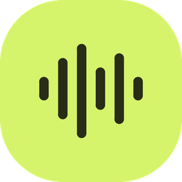
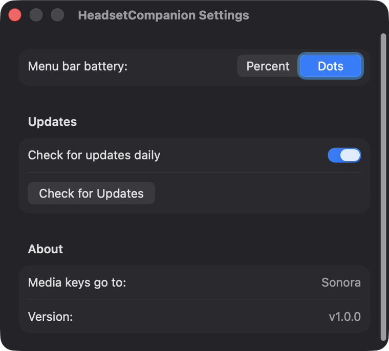

Every noisy tab in one popup — and your headset's battery in the menu bar.
Sonora's Chrome extension finds every tab making noise — YouTube, a podcast, a web radio you opened on Tuesday — and puts them all in one popup. Free, open source, and it shows the battery the Mac app is reading.
Whatever is playing anywhere in the browser turns up in the popup, named and ready to be paused — including the one you can hear but can't find.
Full transport controls per tab: play and pause, scrub the position, set the level. No hunting through windows to turn one thing down.
No browser API exposes headset battery — Chrome on macOS can't even see classic Bluetooth headsets. The app hands the number over on loopback, so the popup can show it next to your tabs.
Your Mac knows how much charge is left in your headset. To see it you open the Bluetooth menu, hover the device, and read a submenu — and the figure waiting there is often hours old. HeadsetCompanion puts a fresh one where you're already looking.
The battery sits under a headphones glyph in one menu-bar slot, narrower than the clock. Five green dots by default, or a small percentage if you'd rather have the digits.
Sony, Bose, AirPods, Jabra, Anker, the cheap pair from the airport. Nothing in the app names a device: it reads what the system Bluetooth stack reports, and falls back to the standard BLE battery service.
One click gives you the volume slider and every output device, each headset carrying its own battery on its row. No more Control Centre, then Sound, then hover.
A Mac for the built-in speakers, the AirPods shape for AirPods, headphones for everything else over Bluetooth. Switch output and the menu bar follows within the same second.
A once-a-day look at this repository's Releases page, then a new version installed in place. No prompts, no installer, no admin password — and an off switch in Settings if you'd rather do it yourself.
One item in the menu bar, one menu under it, and a Settings panel you'll open once.

A minute, and one warning from macOS that you get past with a right-click.
The Download for Mac button gives you a file ending in .dmg, in your Downloads folder.
Double-click the downloaded file. A window opens with the HeadsetCompanion icon and an Applications folder. Drag one onto the other, then close the window.
In your Applications folder, right-click HeadsetCompanion and choose Open, then Open again in the dialog that appears. Double-clicking it the normal way will only be refused. After this first time, it opens like anything else.
Click the new menu-bar icon: volume, your output devices, and the battery for whichever headset is connected. If the number looks wrong for a second, give it ten — that's one poll.
In Settings…, turn on Start at login. macOS may ask you to approve the item once under System Settings → General → Login Items.
Turn Start at login off in Settings, then drag the app to the Trash. Its preferences go with these two lines:
rm -rf /Applications/HeadsetCompanion.app
defaults delete io.sonora.headsetcompanionXcode 15 or newer, Swift 5.10, macOS 13+. The test suite runs offline.
git clone https://github.com/YamineRL/sonora.git
cd sonora
swift test
./build-app.shShort version: nothing. There is nowhere for it to send anything.
Nothing to sign up for, no analytics, no crash reporting, no identifiers. Nothing about your devices, your listening or your Mac leaves the machine.
The only request the app can make is an unauthenticated read of this repository's public releases page, once a day, to see whether a newer version exists. Untick Check for updates daily and even that stops.
The little HTTP server the extension reads from binds to 127.0.0.1. Nothing outside your Mac can reach it — not another machine on your network, not a website.
About 3,000 lines of Swift, all of it in the open. If you'd rather not trust a stranger's binary, build the app from source and run that instead.
The details people usually ask for before downloading anything.
| Detail | Answer |
|---|---|
| Price | Free, both halves, with the source in the open |
| Requires | macOS 13 or newer, Apple silicon or Intel |
| Size | About 500 KB, delivered as a .dmg |
| Signed | No — first launch needs right-click → Open |
| Headsets | Any that reports a level to macOS, plus BLE battery service |
| Refresh | Every 10 seconds, from a fresh read |
| Updates | Daily check, installed in place; switchable off |
| Network | That update check only; battery server on 127.0.0.1 |